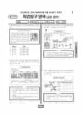

문제지

시험지 만들기준비하고 있어요. 열리면 아래 탭에서 바로 쓸 수 있어요.

시험지를 먼저 풀어 보세요. 점수와 인원 수치는 흐리게 가려 뒀어요.
한국교육과정평가원이 교육부 보도자료로 공개한 표준점수 도수분포로 계산했습니다.
EBSi 응답자 기준으로 가장 많이 틀린 문항은 4번(3점)이고, 오답률은 60.2%입니다. 오답률 50%를 넘은 문항은 1개입니다.
| 순위 | 문항 | 배점 | 오답률 | 정답 | 많이 고른 오답 |
|---|---|---|---|---|---|
| 1 | 4번 | 3점 | 60.2% | ② | ④ 30.6% |
| 2 | 19번 | 3점 | 46.9% | ③ | ④ 20.4% |
| 3 | 10번 | 3점 | 41.8% | ④ | ① 20.4% |
| 4 | 20번 | 2점 | 39.8% | ② | ④ 21.4% |
| 5 | 8번 | 2점 | 39.8% | ③ | ⑤ 21.4% |
| 6 | 12번 | 3점 | 38.8% | ④ | ③ 18.4% |
| 7 | 13번 | 2점 | 30.6% | ③ | ① 14.3% |
| 8 | 6번 | 2점 | 30.6% | ① | ③ 19.4% |
| 9 | 3번 | 2점 | 29.6% | ⑤ | ④ 18.4% |
| 10 | 14번 | 3점 | 28.6% | ② | ③ 8.2% |
| 11 | 7번 | 3점 | 28.6% | ② | ③ 17.3% |
| 12 | 1번 | 2점 | 24.5% | ① | ④ 20.4% |
| 13 | 16번 | 2점 | 23.5% | ③ | ① 7.1% |
| 14 | 17번 | 3점 | 21.4% | ① | ③ 8.2% |
| 15 | 15번 | 3점 | 17.3% | ⑤ | ④ 14.3% |
EBSi 가채점 응답자 기준 · 전 문항 중 오답률 상위 15문항
출처: EBSi 역대 등급컷·오답률 공개 화면. 가채점에 참여한 EBSi 이용자 응답이라 전체 응시자 정답률과는 다를 수 있습니다.
발행 기관: 한국교육과정평가원(KICE). 파일 위치: 이 사이트가 보관한 사본. 저작권은 발행 기관에 있습니다. 원본과 다르거나 게시 중단이 필요하면 연락처로 알려 주세요. 등급컷 출처 구분은 데이터 원칙에서 설명합니다.